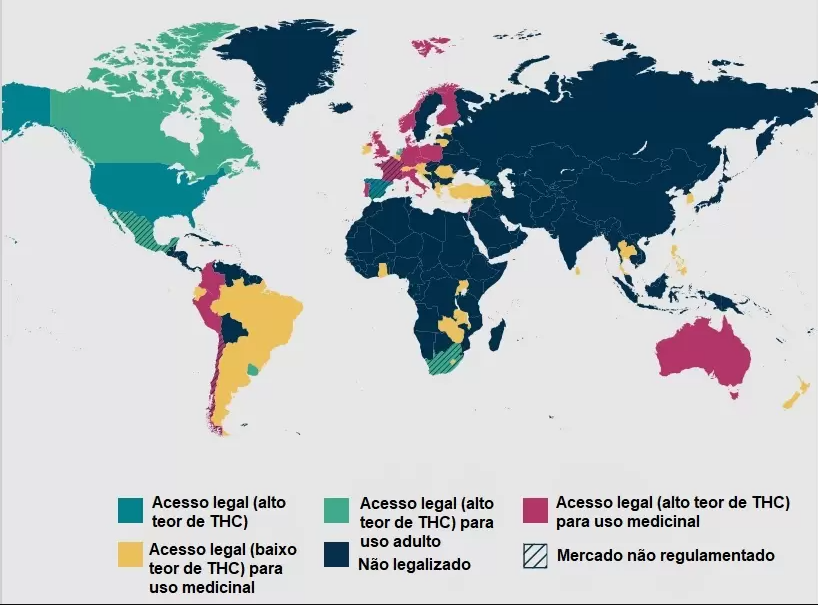
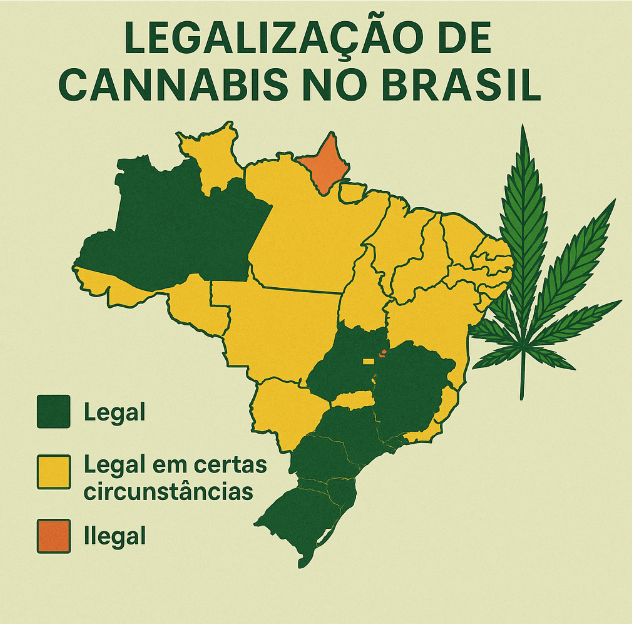

⚖️ Legalização da Cannabis
A legalização da cannabis é um tema em constante debate ao redor do mundo. Envolve questões sociais, políticas, econômicas e de saúde pública. Cada país adota uma abordagem diferente, que pode variar desde a proibição total até a legalização completa para uso medicinal e recreativo.
🌍 Situação atual no mundo
A legalização tem avançado em vários países, com destaque para:
- 🇺🇾 Uruguai: Primeiro país a legalizar completamente a cannabis (2013)
- 🇨🇦 Canadá: Legalizou o uso medicinal e recreativo em 2018
- 🇺🇸 Estados Unidos: Diversos estados legalizaram para uso recreativo e medicinal
- 🇩🇪 Alemanha: Aprovou recentemente a legalização controlada
- 🇳🇱 Holanda: Uso tolerado em coffeeshops há décadas
Outros países têm descriminalizado o porte para uso pessoal ou regulamentado o uso medicinal.
📜 No Brasil
No Brasil, a cannabis ainda é ilegal para uso recreativo. No entanto, existem avanços significativos no campo medicinal:
- ✅ Autorização da Anvisa para medicamentos à base de canabidiol (CBD)
- ⚖️ Decisões judiciais permitindo o cultivo individual para fins terapêuticos
- 🧪 Pesquisa científica autorizada com cannabis medicinal
O debate sobre a regulamentação continua sendo tema frequente no Congresso e na sociedade civil.
💼 Impactos da legalização
- 💰 Econômico: Geração de empregos, arrecadação de impostos e crescimento de indústrias
- 🚔 Segurança pública: Redução do tráfico e da criminalização do usuário
- 🏥 Saúde: Acesso regulamentado e seguro, com menor risco de contaminação
- 📚 Educação: Campanhas de conscientização sobre uso responsável
🤔 Argumentos contra e a favor
Argumentos a favor:
- 🔓 Redução do encarceramento por porte de pequenas quantidades
- ⚕️ Ampliação do acesso a tratamentos medicinais
- 📈 Fortalecimento da economia
Argumentos contra:
- 🚸 Preocupações com aumento do consumo entre jovens
- 🧠 Efeitos colaterais à saúde mental
- 🚫 Dificuldades de fiscalização e regulamentação

🗣️ Curiosidades
- 📊 Estimativas mostram que o mercado legal de cannabis movimenta bilhões de dólares por ano.
- 📦 Em países onde foi legalizada, observou-se redução do mercado ilegal.
- 👮 Muitos ex-policiais e militares se tornaram ativistas da legalização.
- 📣 No Brasil, existem associações de pacientes que lutam por acesso ao cultivo medicinal.